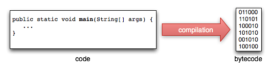
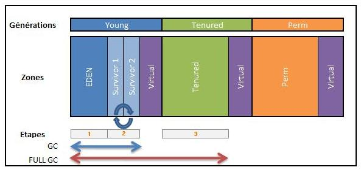
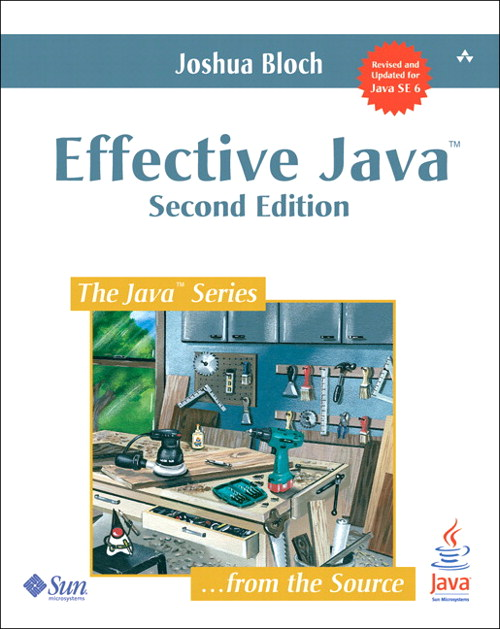

Le langage java
Le Java est un langage orienté objet :
Java n'est pas un language objet pur car il inclut des types de base (int, long...) et on ne peut pas surcharger certains opérateurs (+, -...).
C'est un language fortement typé : les contrôles sont effecutés à la compilation.
Le code source est compilé en bytecode portable.
La version courante est la version 1.7 (java 1.7 équivalent à java 7.0).
Ces quelques slides font un rappel rapide du language et des ses mécaniques.
http://en.wikipedia.org/wiki/Object-oriented_programming
Java est un langage compilé. Mais contrairement au C qui est compilé en instructions natives, Java est compilé en bytecode.
Cela lui permet d'être portable et exécutable sur toutes les machines où tourne une machine virtuelle java (jvm).
Write once, run everywhere
La compilation se fait avec la commande javac
javac -classpath lib1.jar;lib2.jar Hello.java
Elle tranforme les fichiers .java en fichiers .class contenant le bytecode.
L'exécution d'une classe java se fait avec la commande java
java -classpath lib1.jar;lib2.jar Hello
Afin de pouvoir être exécutée, cette classe Hello doit posséder une méthode main.
public static void main(String[] args) {
...
}
Le chargement du code java est dynamique : il est chargé au fur et à mesure du besoin.
La machine virtuelle regarde dans le classpath afin de charger les classes.
Si une classe demandée n'est pas définie dans le classpath alors une erreur est remontée.
java.lang.ClassNotFoundException: path.to.my.unknown.Code Erreur at java.net.URLClassLoader$1.run(URLClassLoader.java:198) ...
Les classes sont organisées en packages correspondants à l'arborescence des répertoires.
package edu.fr.test
public class Test {
...
}
Si on souhaite utiliser une classe depuis une autre, il suffit de faire un import de la classe
import edu.fr.test.Test
Ou de tout le package.
import edu.fr.test.*
Toutes les classes héritent de la classe Object qui définit les méthodes suivantes :
| Object |
|
En pratique :
Une interface définit un contrat (une API) auquel une classe peut adhérer.
On dit alors qu'une classe implémente une interface.
Une interface peut contenir des signatures de méthodes et des constantes
public interface MailService {
public static final int SOME_NAME = 10;
public void send(Mail mail);
public List<Mail> retrieve();
}
Contrairement à une classe, il n'est pas possible d'instancier une interface.
Un enum est une classe qui ne possède qu'un nombre prédéfini d'instances
public enum Gender {
MALE, FEMALE, UNKNOWN;
}
Les instances MALE, FEMALE et UNKNOWN n'existe qu'une seule fois dans toute la jvm.
On peut donc faire des tests d'égalité par référence.
Gender gender1 = Gender.MALE; ... Gender gender2 = Gender.MALE; gender1.equals(gender2); // true gender1 == gender2; // true
Une annotation est un marqueur qui a valeur de qualificatif.
Elle s'utilise simplement en annotant les classes, les attributs ou les méthodes.
@LookAtMe(why = "why not")
public void save() {
...
}
Sa définition à la forme suivante.
public @interface LookAtMe {
String why();
String comments() default "none";
}
Comme une interface, elle ne contient aucun traitement.
Il est possible de venir lire ces marqueurs par introspection.
On utilise beaucoup les annotations. On en définit peu soi même.
Quand une erreur survient, une exception est levée (en anglais thrown).
Une exception est une classe java héritant de la classe Throwable.
On peut lever une exception via la synthaxe :
throw new IllegalArgumentException("param can not be null");
La méthode printStackTrace d'une exception permet d'obtenir la stacktrace :
java.io.FileNotFoundException: test.txt at java.io.FileInputStream.<init>(FileInputStream.java) at java.io.FileInputStream.<init>(FileInputStream.java) at Test.readFile(Test.java:19) at Test.main(Test.java:7)
Une stactrace contient la classe de l'erreur, un message et l'état complet de la pile d'appel au moment ou l'exception a été lancée.
C'est donc un outils très complet afin de comprendre exactement ce qui a déclanché l'erreur.
Une machine virtuelle java réserve et gère la mémoire en masse.
Il n'y a donc pas besoin d'écrire du code afin de réserver ou libérer de la mémoire.
La machine virtuelle segmente la mémoire en fonction de la durée de vie des objets.
Des stragtégies complexes pilotent les données en mémoire.
La garbage collector surveille les objets devenus inutiles et libère la mémoire correspondante.
JEE est un ensemble de librairies et outils facilitant l'usage de java en entreprise.
C'est un panel de services vaste dont en voici quelques élements :
JEE est un outils parmis d'autres et n'est pas une obligation pour java.
Une application jee est déployée dans un conteneur d'applications.
Il fait tourner des applications qui utilisent les librairies jee
Une application jee est constituée de composants.
Le conteneur charge les composants et les sollicite en fonction du besoin.
La déclaration des composants se fait dans un descripteurs de déploiement.
Nous reviendrons plus tard dans la présentation sur jee et les conteneurs.
Effective java : le guide des bonnes pratiques java et objet par Joshua Bloch.
Un catalogue de bonnes pratiques essentielles, simples et efficaces.
Un livre à lire après avoir pris un peu d'expérience en java.
Disponible sur amazon